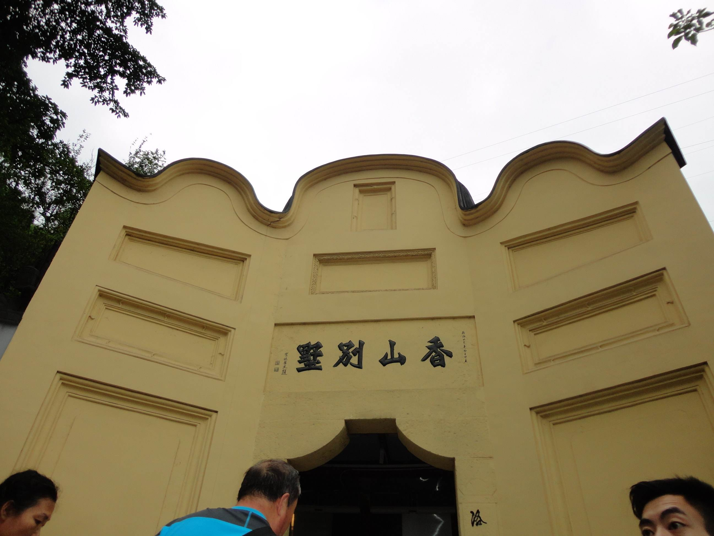

渣滓洞白公馆
Bai Mansion in Jialing Cave

在重庆市歌乐山麓，距白公馆2.5公里。渣滓洞原是重庆郊外的一个小煤窑，因渣多煤少而得名。渣滓洞三面是山，一面是沟，位置较隐蔽。1939年，国民党军统特务逼死矿主，霸占煤窑，在此设立了监狱。分内外两院，外院为特务办公室、刑讯室等，内院一楼一底16间房间为男牢，另有两间平房为女牢。 关押在此的有“六一”大逮捕案、“小民革”案、“挺进报”案、上下川东三次武装起义失败后被捕的革命者，如江竹筠、许建业、何雪松等，最多时达三百余人，此地还曾居住过“小萝卜头”和他们一家人。1949年11月27日国民党特务在溃逃前夕策划了震惊中外的大屠杀，仅15人脱险。有文艺作品《烈火中永生》《红岩》《江姐》等以此为原型。渣滓洞景区免费参观，于2019年1月1日实行实名制网上预约，参观游客可通过官方渠道进行票务预约，通过预约二维码或预约身份证进入景区。中美合作所撤销后，犯人于1947年4月回迁，渣滓洞监狱被合并至白公馆看守所，但暂时废弃。 1947年12月，渣滓洞重新关押犯人，称“重庆行辕二处第二看守所”。关押的人员主要是1947年“六一大逮捕”中被捕的教育、新闻界人士，“小民革”地下武装案被捕人员，上下川东三次武装起义被俘、被捕人员，《挺进报》事件被捕人员，民革川东、川康分会成员等，最多时关押过三百多人。江竹筠、许建业、余祖胜等曾在此关押过。 1949年11月底重庆解放前夕，囚禁于此的二百多位革命志士被杀害。